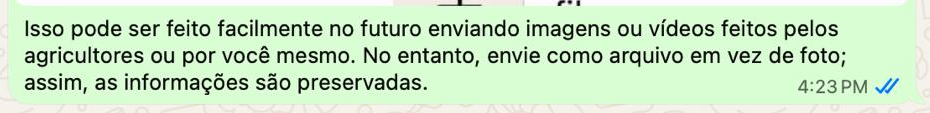

Instruções
Como enviar fotos e vídeos da fazenda de um jeito que preserva a localização (GPS).
1. Envie como ARQUIVO, não como foto
Quando você envia uma foto pelo WhatsApp ou Telegram no modo "foto", o aplicativo comprime a imagem e apaga a localização (GPS). Enviando como "arquivo" ou "documento", a foto chega inteira e a localização é preservada.
Dica: "Envie como arquivo em vez de foto; assim, as informações são preservadas."

2. Ative a localização no celular
Permita que a câmera e o WhatsApp/Telegram usem sua localização:
- Android: Configurações → Aplicativos → WhatsApp → Permissões → Localização → Permitir. (Faça o mesmo para a Câmera e para o Telegram.)
- iPhone: Ajustes → Privacidade e Segurança → Localização → WhatsApp → "Ao usar o app". (Faça o mesmo para a Câmera.)
3. Tire a foto/vídeo perto da árvore
Fique a poucos metros do tronco. De 1 a 2 fotos e um vídeo curto (20 a 30 segundos) são suficientes. Mostre o tronco e, se possível, a copa da árvore.
4. Como enviar como arquivo (passo a passo)
WhatsApp:
- Abra a conversa.
- Toque no clipe 📎.
- Escolha "Documento".
- Toque em "Galeria" ou "Arquivos" e selecione a foto ou o vídeo.
- Envie. Não use o ícone da câmera/foto — isso comprime e apaga a localização.
Telegram:
- Abra a conversa.
- Toque no clipe 📎.
- Escolha "Arquivo".
- Selecione na Galeria e envie.
5. O que escrever junto
No mesmo envio, escreva: a data, a espécie (se souber) e o nome da fazenda/roça. Isso ajuda a identificar e registrar cada árvore corretamente.
Sem internet? O aplicativo Sunmint guarda os registros no seu celular e envia automaticamente quando houver conexão. Nada se perde.